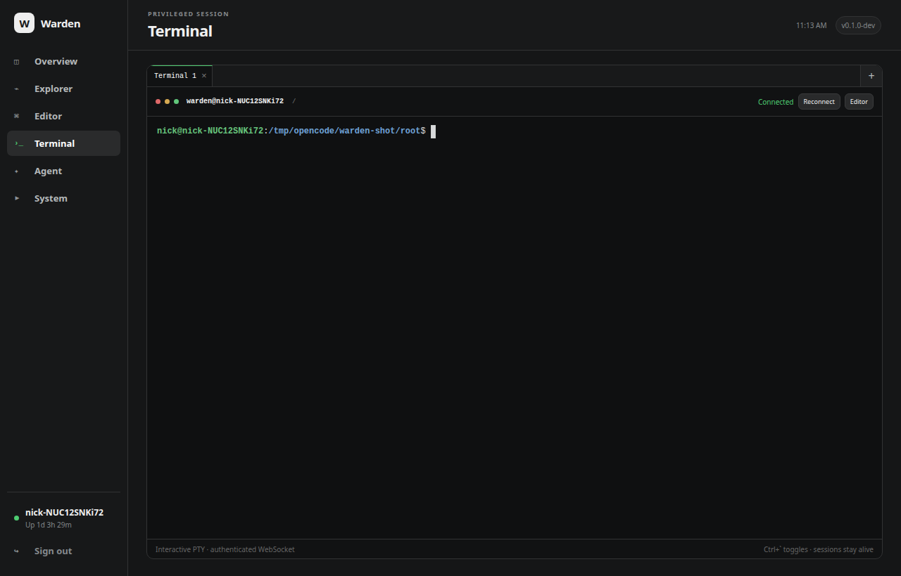

Documentation · Terminal
Terminal
Multiple real Linux PTYs over authenticated WebSockets, available in both Editor and the expanded Terminal view.

Terminal tabs
Create and switch between independent terminal sessions without stopping their shells. Each tab keeps its own PTY, current directory, connection state and bounded scrollback. The shared terminal surface moves between Editor and Terminal without creating a duplicate view.
Durable metadata and scrollback
Terminal definitions are account-owned SQLite records. Warden restores tabs after reload and stores up to 256 KiB of recent server-side output per terminal. Each account may retain up to 16 terminal sessions. Reconnecting starts a new PTY for that durable tab; closing it deletes its stored session and scrollback.
Protocol and lifecycle limits
Client frames must follow the browser WebSocket contract and are capped at 64 KiB. Loader and shell-startup injection variables are removed from the child environment. When the socket ends, Warden kills the PTY shell's process group and waits for it before returning.
Authentication and origin checks
Every WebSocket upgrade requires an authenticated browser session, per-session CSRF token, matching Origin/Host relationship and a valid account-owned terminal identity. ANSI/SGR colour is rendered without weakening the CSP.
Authority
WARDEN_FILE_ROOT confines Explorer, Editor and related file APIs. Every PTY executes with the Warden process user's operating-system authority. Use a dedicated OS account or container when terminal users must not inherit the host account's authority.